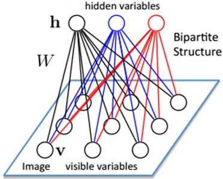
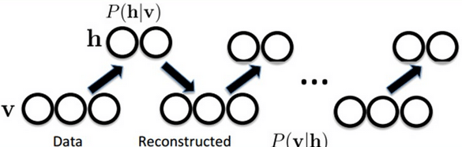
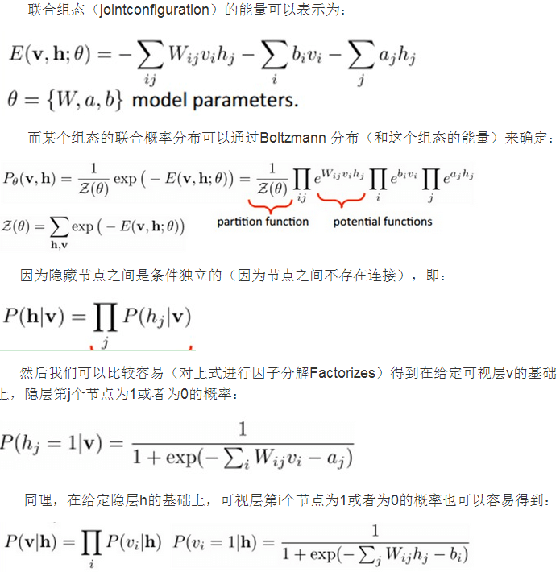
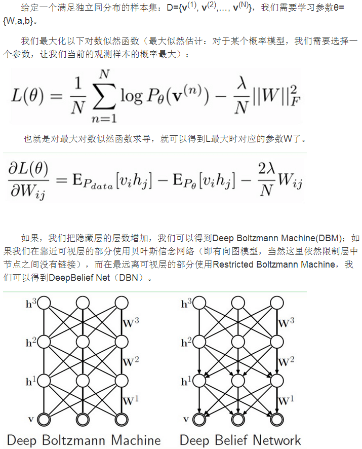
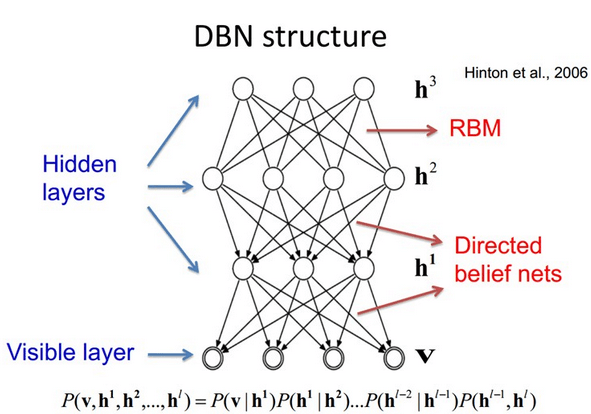

一、 限制玻尔兹曼机（RBM）
1. 概念
假设有一个二部图，每一层的节点之间没有链接，一层是可视层，即输入数据层（v)，一层是隐藏层(h)，如果假设所有的节点都是随机二值变量节点（只能取0或者1值），同时假设全概率分布p(v,h)满足Boltzmann 分布，我们称这个模型是RestrictedBoltzmannMachine (RBM)。

2. 如何把RBM看成是一个深度学习方法
首先，这个模型因为是二部图，所以在已知v的情况下，所有的隐藏节点之间是条件独立的（因为节点之间不存在连接），即p(h|v)=p(h1|v)…p(hn|v)。同理，在已知隐藏层h的情况下，所有的可视节点都是条件独立的。（相互条件独立）
同时又由于所有的v和h满足Boltzmann 分布，因此，当输入v的时候，通过p(h|v) 可以得到隐藏层h，而得到隐藏层h之后，通过p(v|h)又能得到可视层，通过调整参数，我们就是要使得从隐藏层得到的可视层v1与原来的可视层v如果一样，那么得到的隐藏层就是可视层另外一种表达，因此隐藏层可以作为可视层输入数据的特征，所以它就是一种Deep Learning方法。

3. 具体学习方法


二、 深信度网络
1. 概念
DBNs是一个概率生成模型，与传统的判别模型的神经网络相对，生成模型是建立一个观察数据和标签之间的联合分布，对P(Observation|Label)和 P(Label|Observation)都做了评估，而判别模型仅仅而已评估了后者，也就是P(Label|Observation)。对于在深度神经网络应用传统的BP算法的时候，DBNs遇到了以下问题：
a. 需要为训练提供一个有标签的样本集
b. 学习过程较慢
c. 不适当的参数选择会导致学习收敛于局部最优解

2. 算法特点
DBNs由多个RBM层组成，一个典型的神经网络类型如上图。这些网络被“限制”为一个可视层和一个隐层，层间存在连接，但层内的单元间不存在连接。隐层单元被训练去捕捉在可视层表现出来的高阶数据的相关性。
训练时间会显著的减少，因为只需要单个步骤就可以接近最大似然学习。增加进网络的每一层都会改进训练数据的对数概率，我们可以理解为越来越接近能量的真实表达。这个有意义的拓展，和无标签数据的使用，是任何一个深度学习应用的决定性的因素。
DBNs的BP算法只需要对权值参数空间进行一个局部的搜索，这相比前向神经网络来说，训练是要快的，而且收敛的时间也少。DBNs的灵活性使得它的拓展比较容易。一个拓展就是卷积DBNs。
3. 算法对比
目前，和DBNs有关的研究包括堆叠自动编码器，它是通过用堆叠自动编码器来替换传统DBNs里面的RBMs。这就使得可以通过同样的规则来训练产生深度多层神经网络架构，但它缺少层的参数化的严格要求。与DBNs不同，自动编码器使用判别模型，这样这个结构就很难采样输入采样空间，这就使得网络更难捕捉它的内部表达。但是，降噪自动编码器却能很好的避免这个问题，并且比传统的DBNs更优。它通过在训练过程添加随机的污染并堆叠产生场泛化性能。训练单一的降噪自动编码器的过程和RBMs训练生成模型的过程一样。